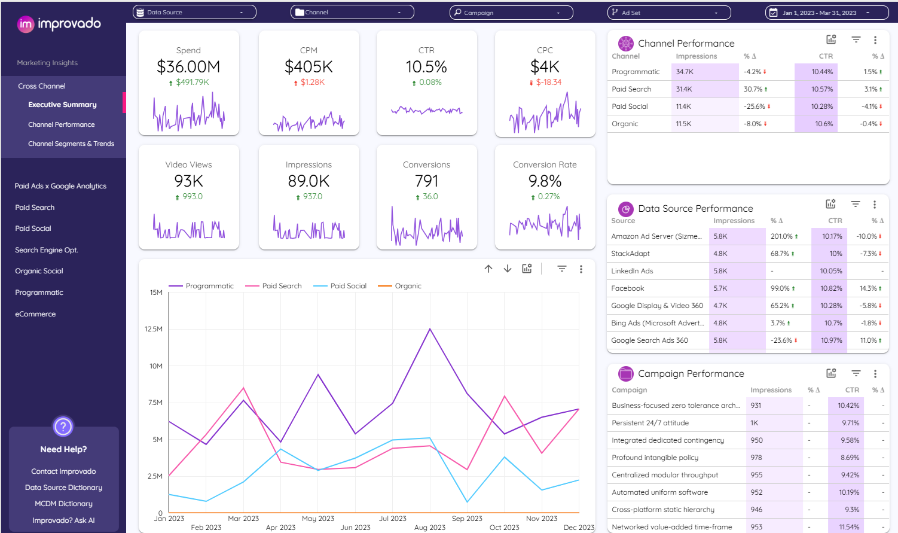

| Project | Leasing Funnel Analysis (SQL + Excel) |
|---|---|
| Tools Used | PostgreSQL, SQL (Joins, Aggregations), Python (Polars), Excel (Dashboard) |
| Description | Built an end-to-end analytics project using a realistic leasing funnel dataset. Cleaned messy CSVs, enforced relational integrity across leads, tours, leases, and properties, wrote SQL queries for funnel conversion metrics and trends, and designed an Excel dashboard with KPIs (Lead → Tour, Lead → Lease) and source/month breakdowns. |

|
| Project | SaaS KPI Dashboard – Revenue, Growth & Churn Analytics |
|---|---|
| Tools Used | Python (Pandas), SQL (PostgreSQL), Power BI |
| Description | Built an end-to-end SaaS analytics solution starting from raw, messy data. Performed data cleaning and validation using Python and SQL, defined KPI logic for MRR, churn, and customer growth, and designed an executive-level dashboard to support data-driven decision-making. Documented data assumptions, quality limitations, and edge case handling to ensure reliable and transparent reporting. |

|
| Project | Business Intelligence Dashboard for Retail Sales Performance |
|---|---|
| Tools Used | Python, SQL, Power BI, DAX |
| Description | Built an end-to-end BI solution to analyze retail sales performance. Performed data cleaning, SQL transformations, DAX modeling, and created interactive dashboards to track KPIs and trends. |

|
| Project | Elegant Data Cleaning Techniques in SQL (Housing Dataset) |
|---|---|
| Tools Used | SQL Server, MySQL, Window Functions, CTEs, String Functions |
| Description | Performed comprehensive data cleaning and transformation on a housing dataset using advanced SQL techniques. Standardized date formats, removed duplicates, handled missing values, split and normalized address fields, and applied CTEs and window functions to improve data quality and query efficiency for analysis and reporting. |

|
| Project | Looker Studio Marketing & Performance Dashboards |
|---|---|
| Tools Used | Looker Studio, Google Analytics, Google Ads, SQL, Google Sheets |
| Description | Designed interactive Looker Studio dashboards to monitor marketing performance metrics including ad spend, impressions, clicks, and conversions. |
|  |
| Project | Hospital ER Performance Dashboard (Excel) |
|---|---|
| Tools Used | Microsoft Excel, Pivot Tables, Power Query, Charts, KPI Metrics |
| Description | Built an end-to-end Excel-based dashboard to monitor emergency room performance. |

|
| Project | COVID-19 Data Exploration and Analysis in SQL |
|---|---|
| Tools Used | SQL Server, Joins, CTEs, Window Functions, Aggregations |
| Description | Conducted exploratory analysis on global COVID-19 datasets using SQL. |
| Project | Exploration of Advanced SQL Queries |
|---|---|
| Tools Used | MySQL, SQL Server, Joins, Subqueries, CTEs, Window Functions |
| Description | Developed a collection of advanced SQL queries to solve real-world data analysis problems. |

|
| Project | Power BI Dashboards and Analytics Projects |
|---|---|
| Tools Used | Power BI, DAX, Power Query, SQL, Data Modeling |
| Description | Developed a collection of interactive Power BI dashboards and analytics reports. |
| Project | Tableau Public Interactive Dashboards |
|---|---|
| Tools Used | Tableau, Calculated Fields, LOD Expressions, Data Visualization Best Practices |
| Description | Created interactive dashboards in Tableau Public to explore and communicate insights. |

|
| Project | Python Projects for Data Analytics and Automation |
|---|---|
| Tools Used | Python, Pandas, NumPy, Matplotlib, Automation Scripts |
| Description | Collection of Python projects focused on analytics, visualization, and automation scripts. |
|
|
| Project | Excel Projects for Dashboards, Automation, and Reporting |
|---|---|
| Tools Used | Microsoft Excel, Power Query, Pivot Tables, Formulae, VBA |
| Description | Excel portfolio focused on dashboarding, reporting, and workflow automation. |
|
|